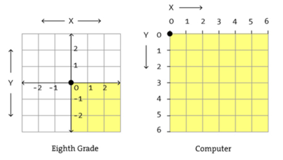
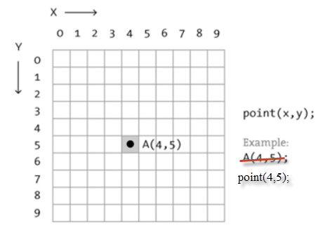
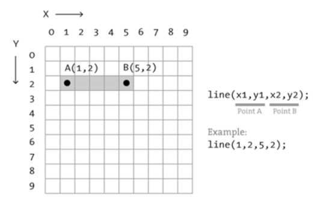
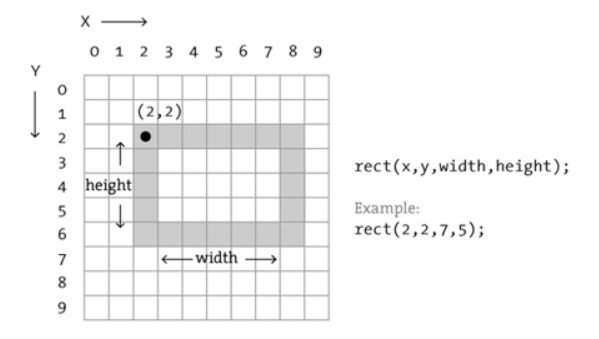
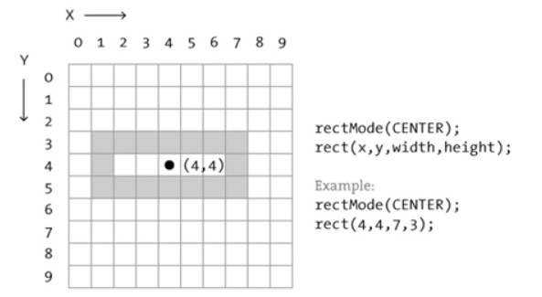
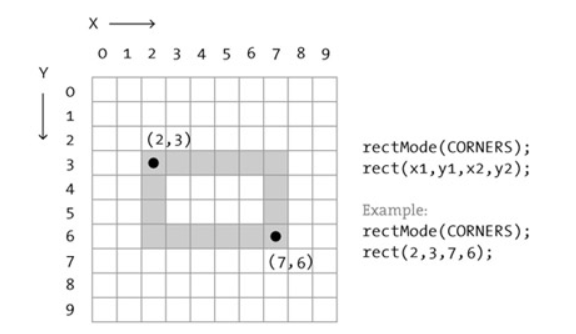
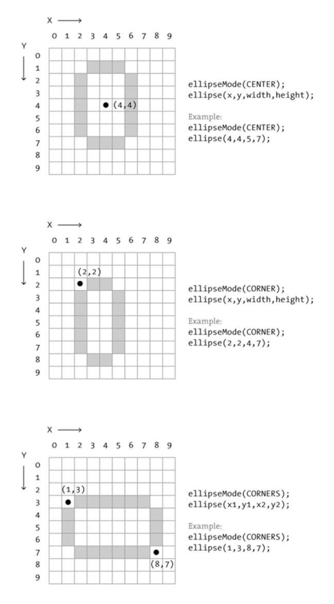
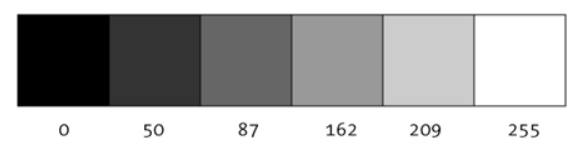
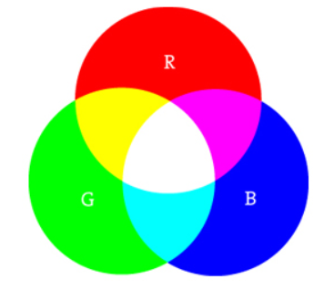
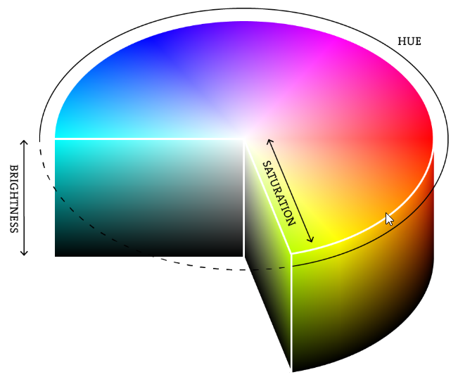

Im Gegensatz zur Schulmathematik ist in der Computergrafik der Ursprung des Koordinatensystems oben links. Die positive y-Richtung geht nach unten.

Hier ist unser Fenster 10 Pixel breit und 10 Pixel hoch. Um einen Punkt zu zeichnen, benötigen wir zwei Argumente, die x-Koordinate und die y-Koordinate.

Für eine Linie benötigen wir die Koordinaten zweier Punkte.

Ein Rechteck wird durch die Koordinaten der linken oberen Ecke und die Breite und Höhe des Rechtecks festgelegt.

Der Standardeinstellung (default) ist rectMode(CORNER). Wir können das Rechteck aber auch durch die Koordinaten des Mittelpunkts festlegen.

Oder wir können das Rechteck durch die Angabe der Ecken oben links und unten rechts festlegen.

Das Zeichnen einer Ellipse funktioniert ähnlich wie ein Rechteck, nur ist hier der default ellipseMode(CENTER).

Dreiecke und Vierecke werden durch die Angabe von 3 bzw. 4 Koordinaten festgelegt.
Grauwerte werden durch eine Zahl zwischen 0 (schwarz) und 255 (weiß) codiert. 
Farben auf dem Bildschirm werden durch Mischung von farbigem Licht erzeugt. Die drei Grundfarben sind Rot, Grün und Blau.

rot + grün = gelb rot + blau = magenta blau + grün = cyan rot + grün + blau = weiß keine Farben = schwarz
Für jede der drei Farben R, G, B wird ein Wert zwischen 0 (keine Farbe) und 255 (volle Farbe) angegeben.
Code
Die Mischung einer gewünschten Farbe mittels RGB-Werte ist nicht einfach. Es helfen Color Selektoren und Farbtabellen, z.B: W3C oder Adobe Color CC
Als vierter Wert kann bei der Festlegung der Farbe der Alpha-Wert mitgegeben werden. Er bestimmt die Transparenz der Farbe. Der Alpha-Wert 0 bedeutet völlige Transparenz (keine Deckkraft), 255 bedeutet keine Transparenz (volle Deckkraft) der Farbe.
Code
Mit ColorMode(HSB) schalten wir in den HSB-Modus, in dem eine Farbe durch die drei Parameter hue (0-255, Farbton), saturation (0-255, Sättigung) und brightness (0-255 Helligkeit) bestimmt ist.

Die Wertebereiche kann man anpassen, häufig wird ColorMode(HSB,360,100,100) genutzt. Mit ColorMode(RGB,255,255,255) schalten wir in den default RGB-Modus zurück.
Eine einfache Farbwahl ist die Übernahme des Hex-Werts der Farbe aus einem Colorselektor
Bei Adobe Color CC finden sich Farbpaletten von jeweils 5 zusammenpassenden Farben. Mit copy+paste können die Hex-Werte übernommen werden.
Code
Mehrere Rechtecke bilden eine Figur. Code
Mehrere Rechtecke bilden eine Figur. Code
Weiße Linien auf schwarzem Hintergrund. Code
Ein Muster mit grauen Quadraten. Code
Farbige Figuren mit dickem Rand. Code
Überlappende Figuren mit Transparenz. Code
Dein Name mit einfachen Formen. Code
Ein Bild in der Art von Piet Mondrian. Code
Eine Spielfigur aus einfachen Formen. Code